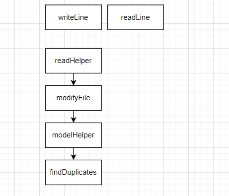
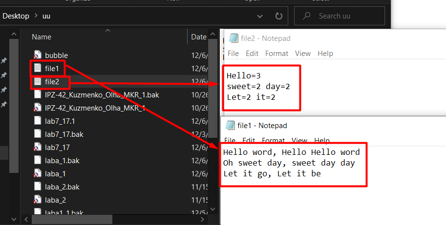

Мета: Опанувати теоретичні основи обробки рядків та текстових файлів мовами функціонального програмування та розробити програми їх реалізації.
Ніро-діаграма
12. Записати в текстовий файл n рядків тексту, що задаються програмою на функціональній мові програмування. Зчитати рядки із створеного програмою файлу, вивести їх на екран. Визначити однакові слова в кожному рядку, надрукувати їх та їх кількість. Записати в новий текстовий файл однакові слова кожного рядка.
Аналіз завдання
При виконанні даного завдання,було використано вбудовані функції зчитування та запису файлу. Також було використано вбудовану функцію підрахунку кількості елементу в масиві.
Код програми
#lang racket
;функція для запису в файл трьох рядків
(define (writeFile)
(let ((port (open-output-file "C:\\Users\\kuzme\\OneDrive\\Рабочий стол\\uu\\file1.txt")))
(display "Hello word, Hello Hello word" port)
(display "Oh sweet day, sweet day day \n" port)
(display "Let it go, Let it be\n" port)
(close-output-port port))
)
;функція для зчитування файлу
(define (readFile)
(let ((port (open-input-file "C:\\Users\\kuzme\\OneDrive\\Рабочий стол\\uu\\file1.txt")))
(readHelper port)
(close-input-port port)
)
)
;функція яка зчитує по черзі рядки з файла
(define (readHelper file)
(let ((line (read-line file)))
(if (eof-object? line)
(display "File Read Finished\n")
(begin (display line)
(display "\n")
(readHelper file))))
)
;функція, що відкриває один файл для зчитування, а інший на записування
(define (modifyFile)
(let ((portOut (open-output-file "C:\\Users\\kuzme\\OneDrive\\Рабочий стол\\uu\\file2.txt"))
(portIn (open-input-file "C:\\Users\\kuzme\\OneDrive\\Рабочий стол\\uu\\file1.txt"))
(resultingWords (list )))
(modHelper portIn portOut resultingWords)
(close-input-port portIn)
(close-output-port portOut)
))
;функція яка приймає рядок з файлу та визиває функцію пошуку дублікатів
(define (modHelper inputFile outputFile resultingWords)
(let ((line (read-line inputFile)))
(if (eof-object? line)
(display "File Mod Finished\n")
(begin
(display "\n" outputFile)
(display resultingWords)
; визиває функцію пошуку дублікатів
(findDuplicates 0 (string-split line) outputFile resultingWords)
;рекурсивно визивається функція, але вже з наступним рядком
(modHelper inputFile outputFile resultingWords)))
))
;функція для пошуку дублікатів в рядку
(define (findDuplicates index wordsArray file resultingWords)
; виконується умова, якщо слово повторюється більшк ніж 1 раз, і ще не нема в масиві
(cond [(and (not (= 1 (count (lambda(arg) (equal? arg (list-ref wordsArray index))) wordsArray))) (= 0 (count (lambda(arg) (equal? arg (list-ref wordsArray index))) resultingWords)))
(begin
; виводимо слово яке повторювалось більше ніж 1 раз
(display (list-ref wordsArray index) file)
(display "=" file)
; рахуємо та виводимо кількість повторювань
(display (count (lambda(arg) (equal? arg (list-ref wordsArray index))) wordsArray) file)
(display " " file)
;записуємо до масиву, аби повторювальне слово не вивести ще раз
(set! resultingWords (append resultingWords (list (list-ref wordsArray index))))
(display resultingWords)
)
]
)
(cond
[(< (+ 1 index) (length wordsArray)) (findDuplicates (+ 1 index) wordsArray file resultingWords)]) ;рекурсивно переходимо до іншого слова у рядку
)
(writeFile)
(modifyFile)
(readFile)
Результати
Оцінка достовірності результату
Можно побачити, що в файл1 записалися наші строки. А в файл2 було записано слова та їх кількість повторюваності. Як можно бачити на малюнку, кількість справді співпадає з тим що записано в файлі1. Таким чином, можно зробити висновок, що програма відпрацьовує коректно.
Висновки
В лабораторній роботі було реалізовано завдання, що передбачає маніпуляції з рядками, їх запис і зчитування з файлів. В цілому, завдання є доволі тривіальним та не викликали ніяких труднощів.